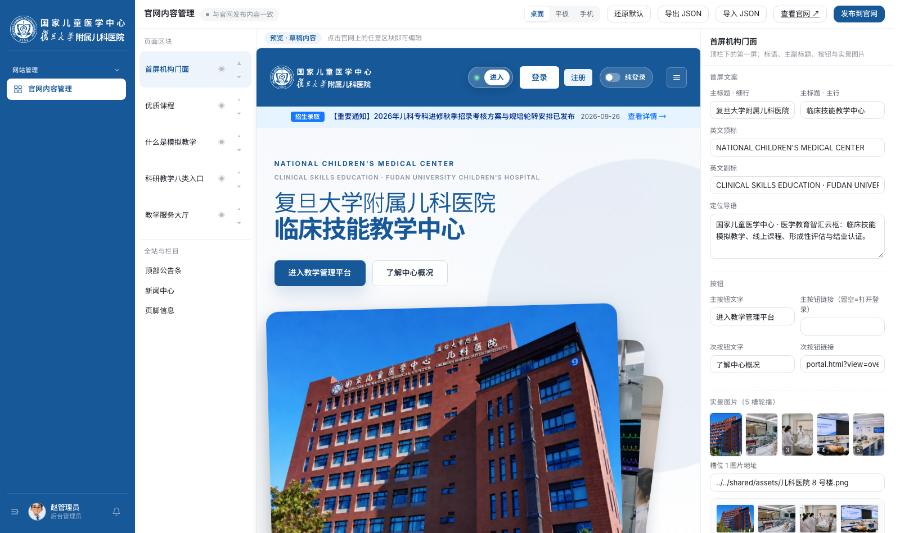
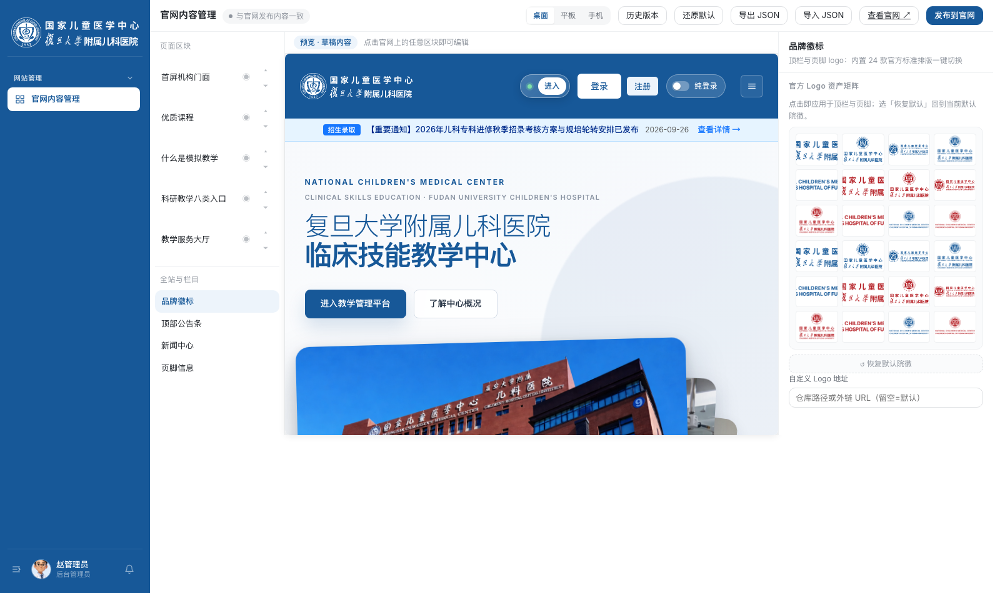
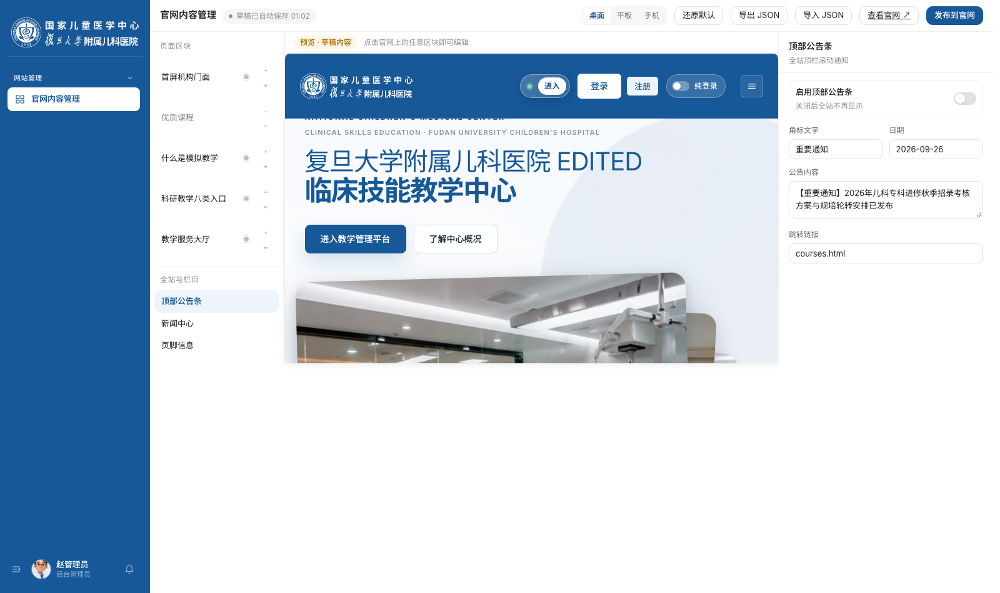
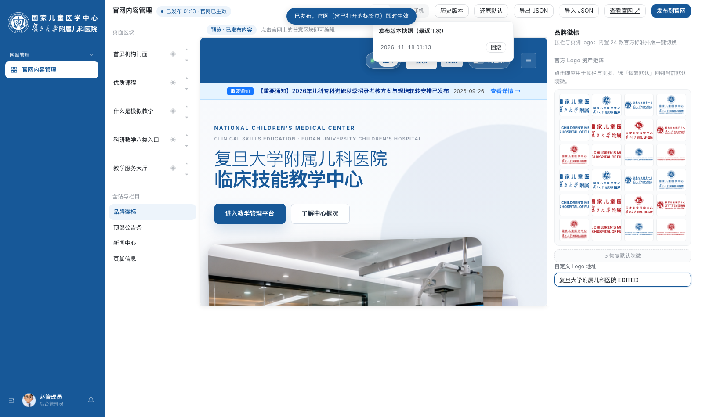
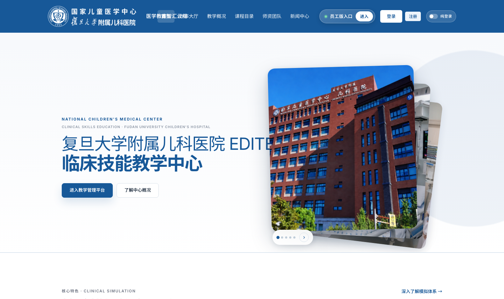
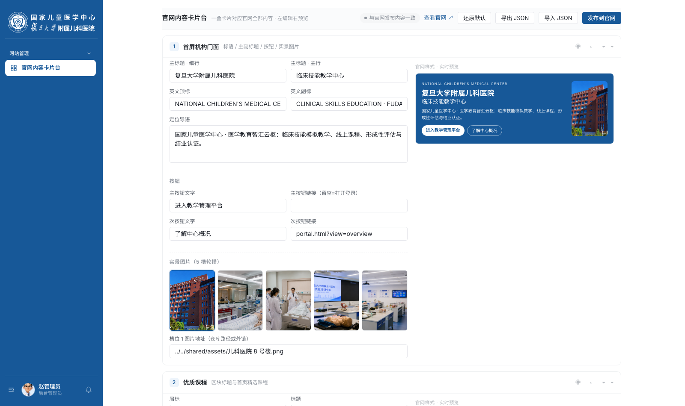
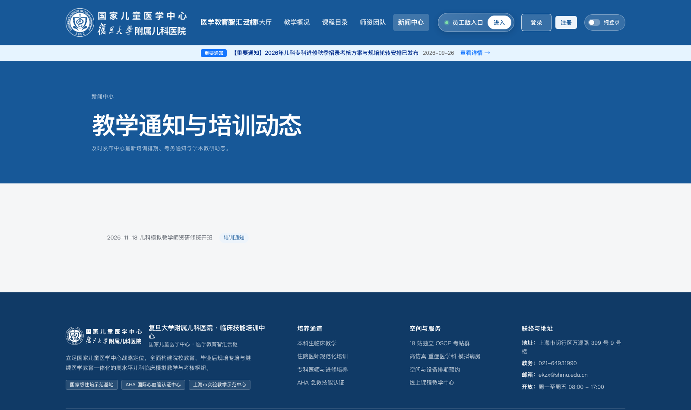

改动概要
新增页面 2 个 共用底座 2 个文件 官网增量接入 1 个新文件 + 2 行 script 导航/模块映射增量 2 处 浏览器验收 32/32 通过| 文件 | 性质与说明 |
|---|---|
pages/官网内容管理/（5 个文件） | 新增。方案 A：内容大纲 + 官网实时预览 iframe + 属性面板；点击官网区块即选中编辑，编辑即时刷新预览并自动保存草稿，发布后官网热更新。 |
pages/官网内容卡片台/（4 个文件） | 新增。方案 B：一叠与官网一一对应的区块卡片，左编辑右迷你实时预览；纯 Vue3+Arco，无 iframe，file:// 可用。 |
pages/官网内容管理/content-schema.js | 新增。内容 Schema 唯一真相来源，默认值逐字对齐官网现状；两方案共用。 |
pages/官网内容管理/content-store.js | 新增。草稿/发布双态存储（fdek.siteContent.v1 / fdek.siteContent.draft.v1）、发布同步旧键 fdek.portal.config、导入导出。 |
pages/官网/content-apply.js | 新增。官网消费层：有发布数据才应用（hero/公告条/四维卡/八类入口/服务大厅/页脚/新闻中心）；支持 storage 事件热更新。 |
pages/官网/index.html、portal.html | 增量 1 行：各引入 content-apply.js。无发布数据时官网行为与改动前完全一致（已自动化验证）。 |
shared/js/module-loader.js | 增量：moduleMap 新增两页映射（含官网数据三件套与共用底座依赖）。 |
shared/js/nav-data.js | 增量：后台管理员「网站与内容」组最前加入两个新页面入口（旧入口保持不变）。 |
方案 A · 官网内容管理（可视化所见即所得）





方案 B · 官网内容卡片台（卡片工作台）


验收与边界
- 双方案浏览器自动化验收 32/32 通过（三栏/卡片渲染、预览同步、草稿保存、Logo 资产矩阵切换、公告开关、显隐排序、发布写键、旧键与 logoUrl 同步、版本快照与回滚、官网生效、新闻中心生效、双方案数据互通、控制台零异常）。
- 零侵入边界验证 5/5 通过：未发布任何内容时，官网 hero / 公告条 / 八类入口 / 服务大厅 / 页脚与改动前完全一致。
scripts/verify-public-pages.cjs中本次未触碰的course.html断言存在既有失败（三个页签/结业条件/内联 style），与本次改动无关。- 官网旧版两处编辑入口（site.js 快捷抽屉、后台配置页·内容发布 tab）原样保留，新旧数据通过发布同步机制互相兼容。
对比与选型建议见：docs/官网内容管理-双方案对比与推荐-20261118.html